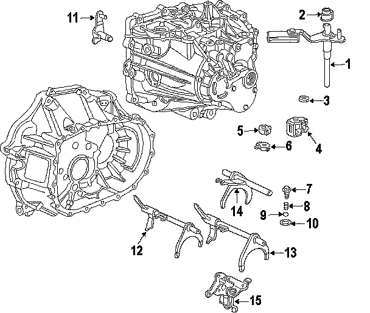
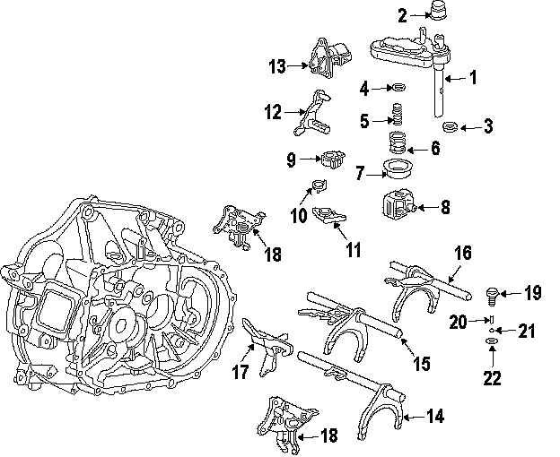
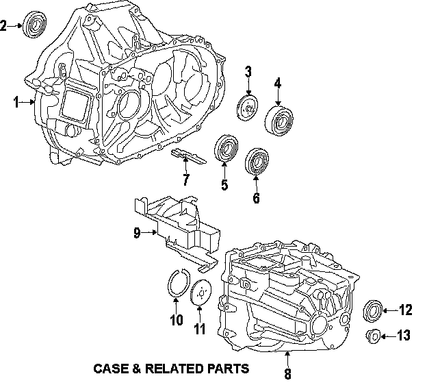
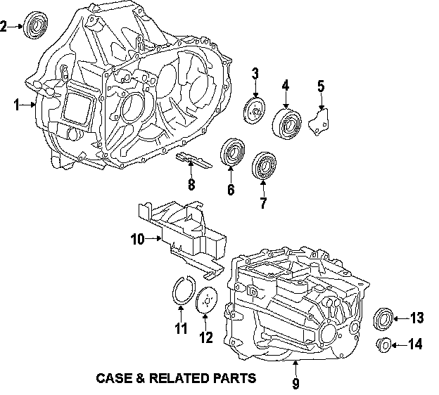
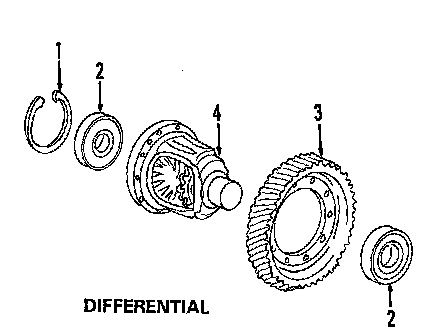
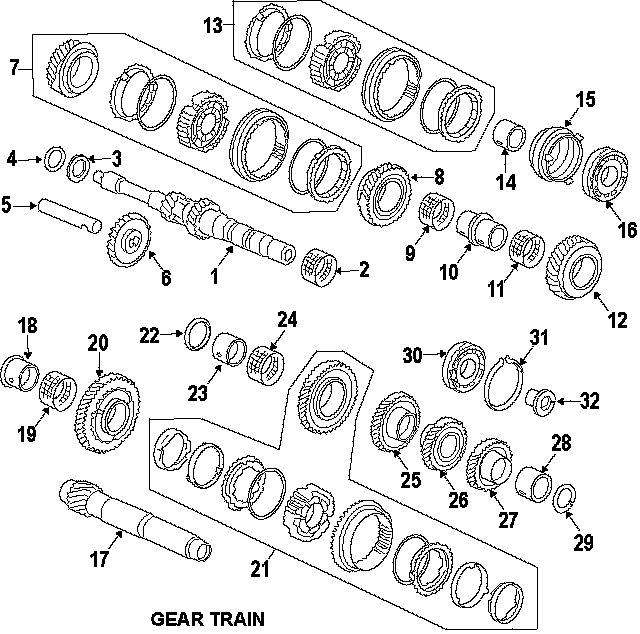
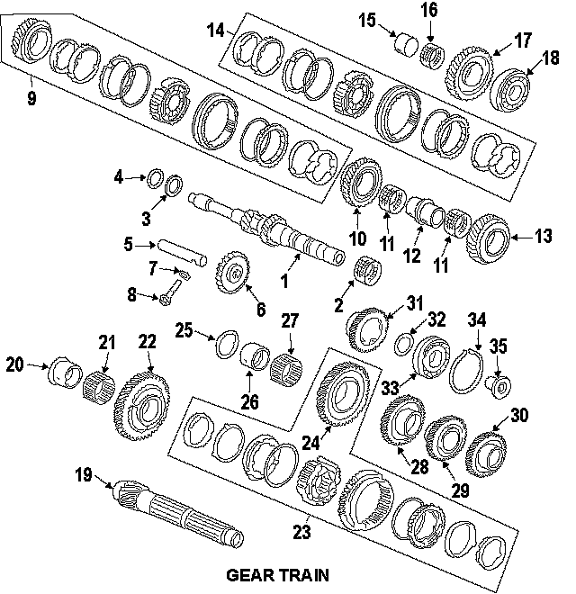

Operation CHARM
: Car repair manuals for everyone.
Home
>>
Honda
>>
2007
>>
Civic Si L4-2.0L
>>
Parts and Labor
>>
Transmission and Drivetrain
>>
Manual Transmission/Transaxle
>>
Images
Images
Shift Forks & Rails, 5 Speed:

Shift Forks & Rails, 6 Speed:

Case & Related Parts, 5 Speed:

Case & Related Parts, 6 Speed:

Differential, 5 Speed:

Differential, 6 Speed:
Mainshaft and Countershaft, 5 Speed:

Mainshaft and Countershaft, 6 Speed:
